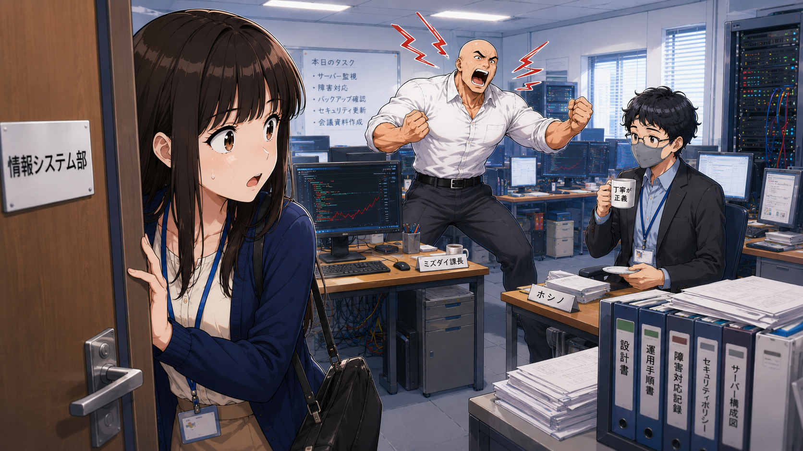
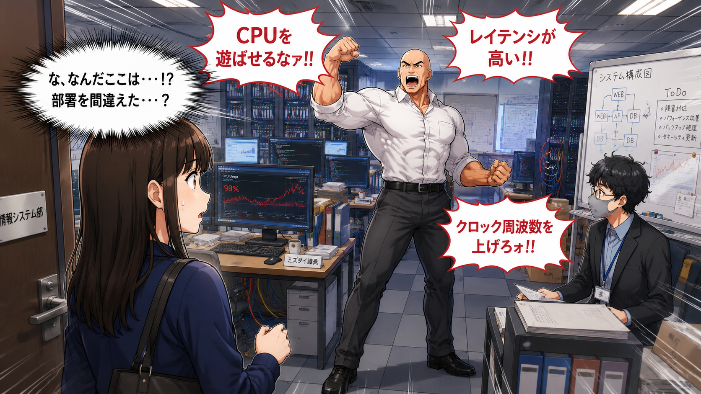
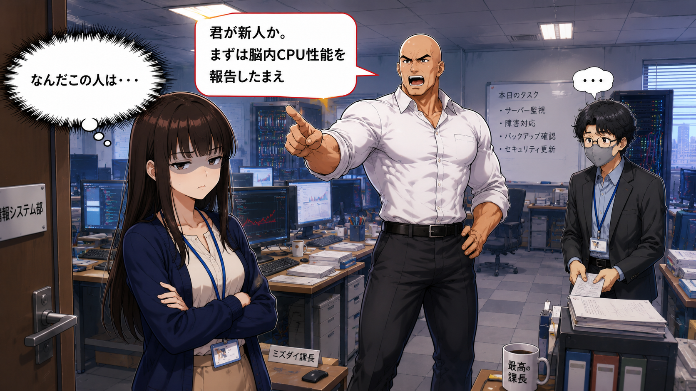

丁寧の権化、現る

ベテラン社員 ホシノ
ホシノ
アオキ
ホシノ
アオキ
ホシノ




昼前。
ミズダイ課長の机の上には、 書類が山のように積み上がっていた。
メール、電話、チャット、会議通知。
同時にいくつもの仕事が襲い掛かる。
ミズダイ「まずい…」
ミズダイ「脳内メモリ使用率が99％だ…」
アオキ「寝不足って言えばいいのでは？」
ミズダイ「いや、今は会議資料を考えながら、 障害報告を読んで、 バックアップ確認もしなければならん。」
アオキ「一気にやりすぎです！」
ホシノ「メモリとは、一時的に作業する机の広さのようなものです。」
ホシノ「机が狭いと、たくさんの資料を広げられません。」
ホシノ「コンピュータも同じでございます。」
アオキ「なるほど。」
アオキ「課長の机が散らかってるのはメモリ不足なんですね。」
ミズダイ「失礼な。」

アオキは課長の本棚を見て驚いた。
分厚いマニュアルがびっしり並んでいる。
アオキ「課長、こんなに資料使うんですか？」
ミズダイ「当然だ。」
ミズダイ「私の脳内SSDは8TBある。」
アオキ「人間の話をしてください。」
ホシノ「SSDやHDDはデータを保存する場所です。」
ホシノ「先ほどのメモリが作業机なら、 SSDは倉庫ですね。」
ホシノ「使わない資料は倉庫にしまい、 必要な時だけ机に持ってきます。」
アオキ「机と倉庫か。」
アオキ「だいぶイメージできてきました。」

その時。
ミズダイ課長が突然ホワイトボードに道路を書き始めた。
ミズダイ「CPUとメモリを結ぶバスが渋滞している！」
アオキ「また始まった。」
アオキ「バスって乗り物ですか？」
ホシノ「コンピュータのバスとは、 データが通る道路のことでございます。」
ホシノ「CPU、メモリ、SSDは、 道路でつながっております。」
ホシノ「道路が細いと渋滞します。」
ホシノ「広い道路ならデータを素早く運べます。」
アオキ「高速道路みたいなものですね。」
ホシノ「その通りでございます。」

午後。
アオキはさっき聞いた話を思い出そうとしていた。
アオキ「えーと…CPUが頭で…」
「机がメモリで…」
「倉庫がSSDで…」
「道路がバス…」
「あれ？」
「何か忘れた。」
ミズダイ「君のキャッシュ容量が少ないな。」
アオキ「また始まった。」
ホシノ「キャッシュとは、 CPUのすぐ近くにある超高速メモリです。」
ホシノ「よく使う情報を近くに置いておくことで、 すぐ取り出せるようにしています。」
ホシノ「机の上の付箋のようなものですね。」
アオキ「なるほど。」
アオキ「付箋だからすぐ見られるんですね。」
ミズダイ「そして私のクロック周波数は5GHz。」
アオキ「まだ言ってる。」
ホシノ「クロック周波数とは、 CPUがどれくらい速く仕事をするかを表す指標です。」
ホシノ「ただし速いだけではなく、 CPU、メモリ、SSDなど全体のバランスが大切でございます。」
アオキ「コンピュータって、人間の仕事場みたいなんですね。」
ホシノ「そのように考えると理解しやすいですね。」
ミズダイ「つまり私は超高性能PCということだ。」
アオキ「まず定時でシャットダウンしてください。」